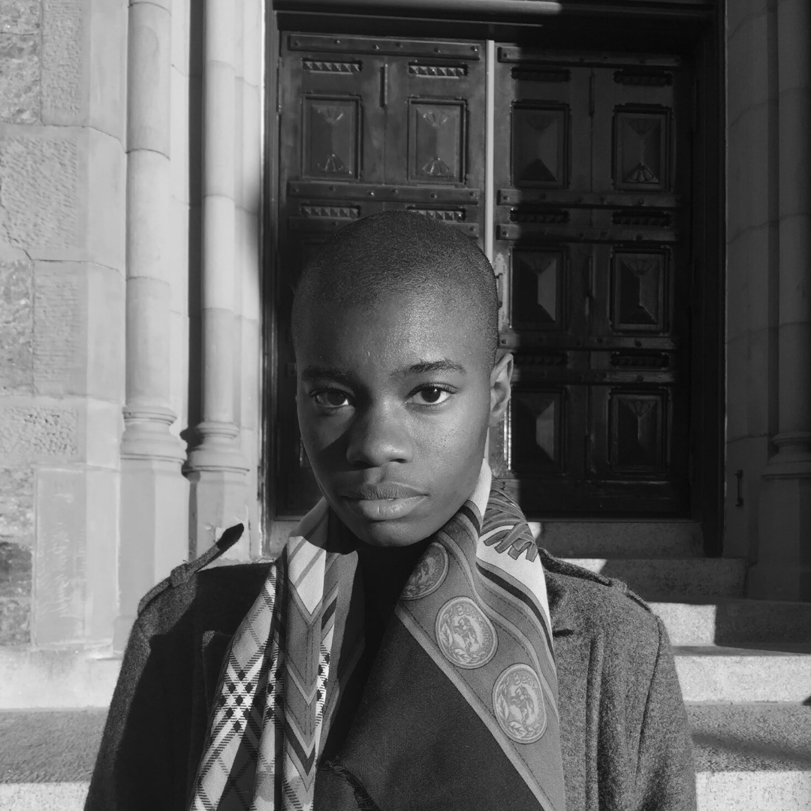
August 2020
Cierra Michele Peters
Boston, MA
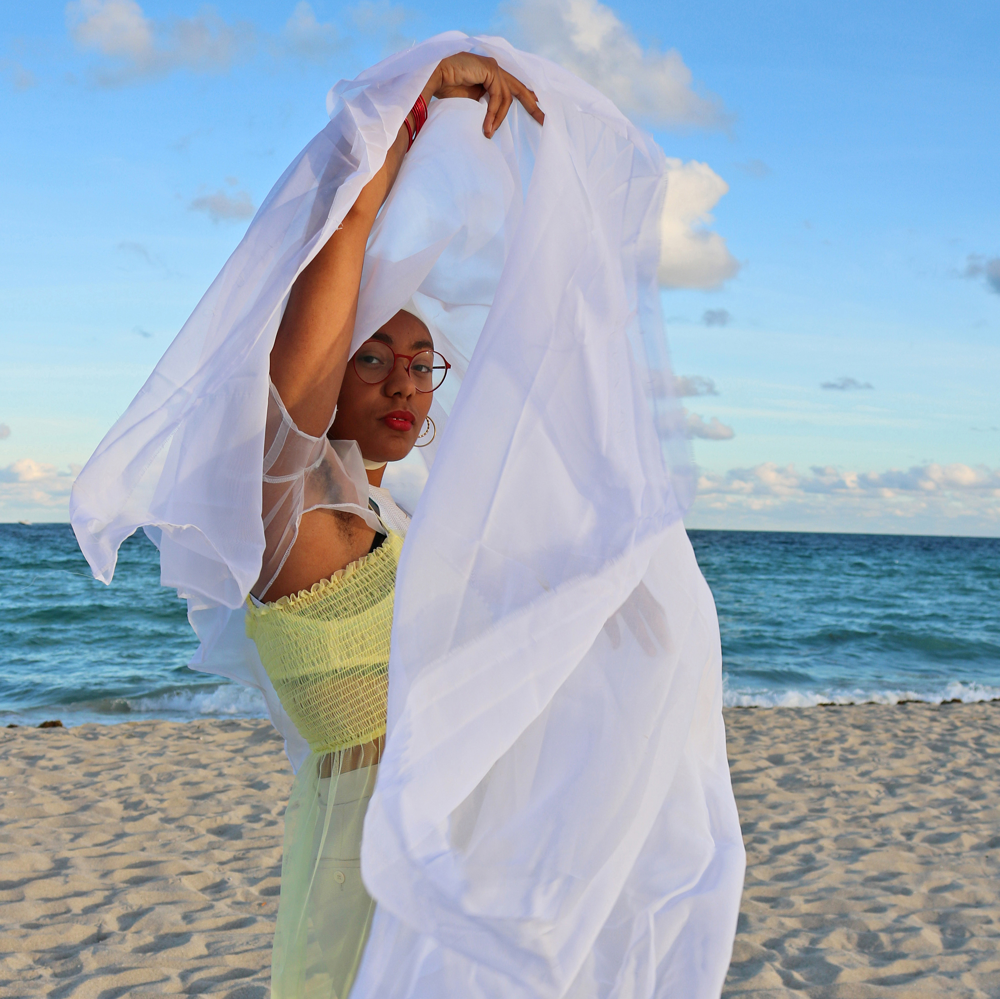
January 2021
Nadia Wolff
Miami, FL
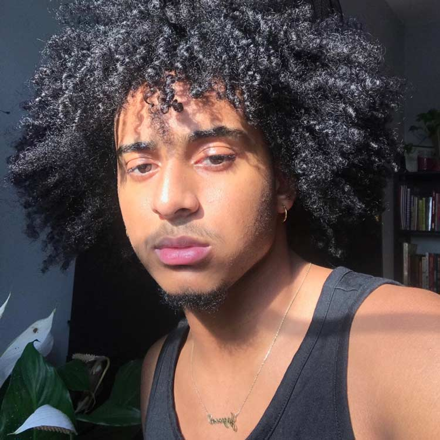
November 2020
Jayson Rodriguez
Providence, RI
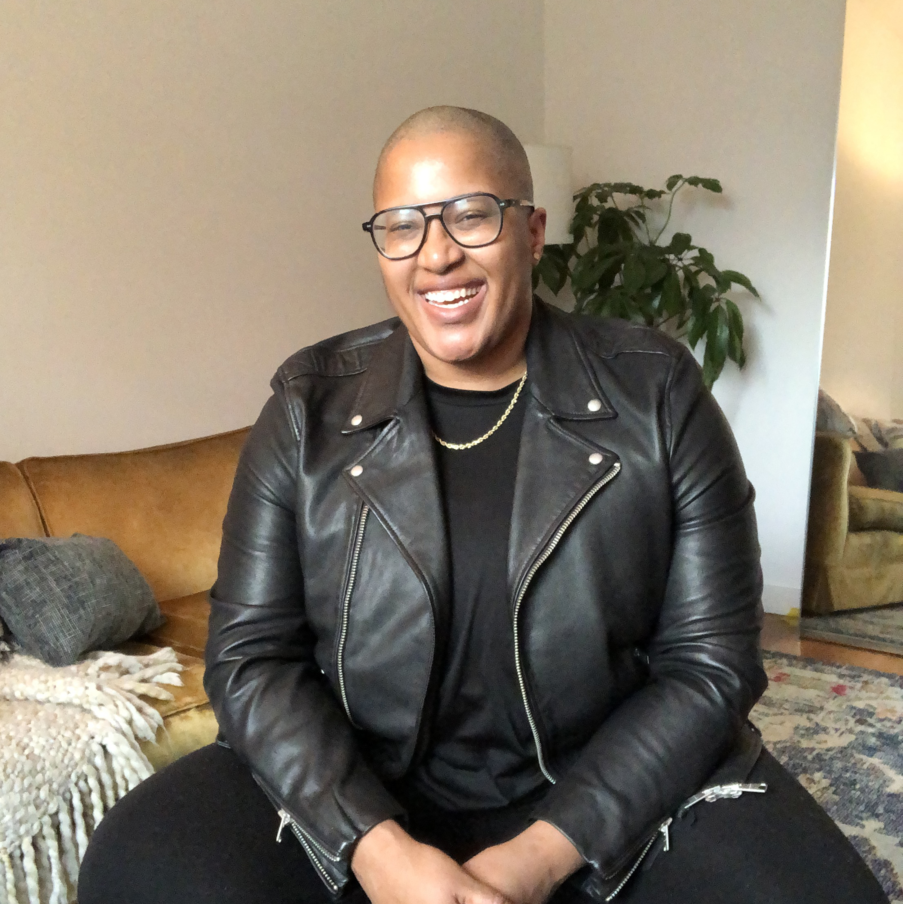
September 2020
Sloan Leo
Brooklyn, NY
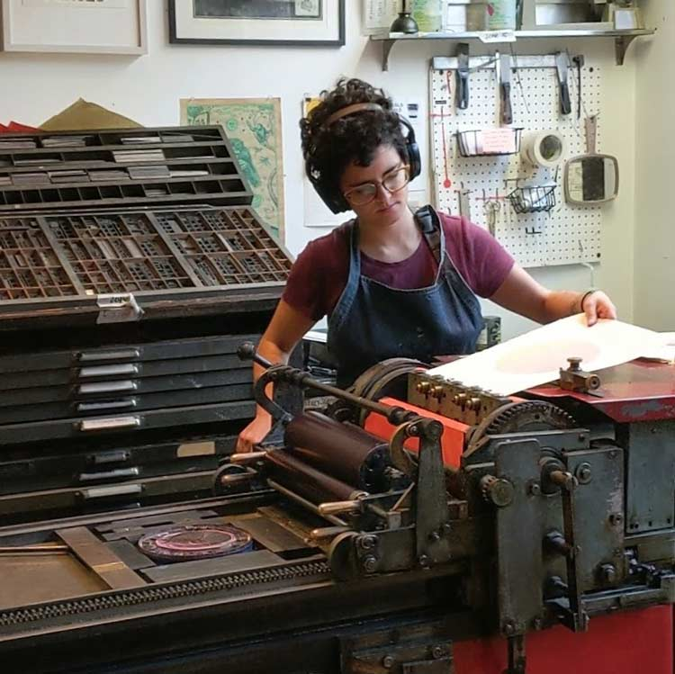
February 2021
Sara Inacio
Providence, RI
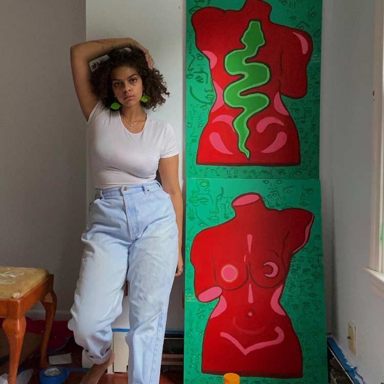
November 2020
Laila Ibrahim
Providence, RI
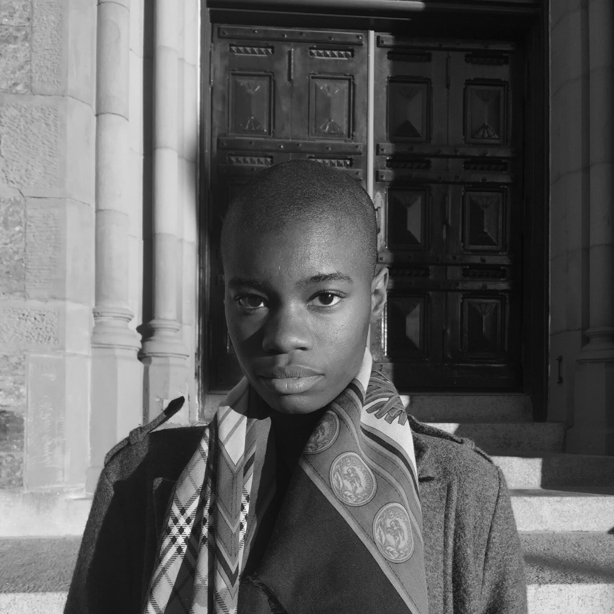
August 2020
Cierra Michele Peters
Boston, MA
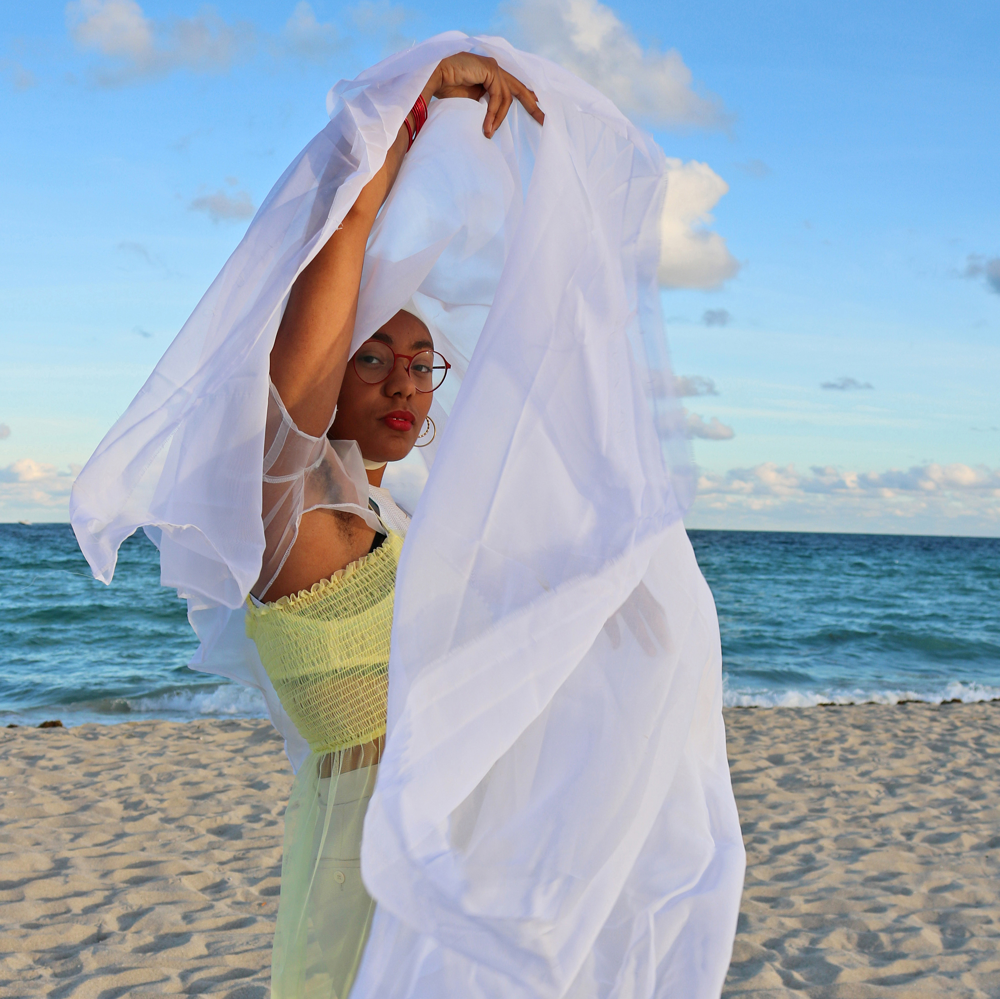
January 2021
Nadia Wolff
Miami, FL
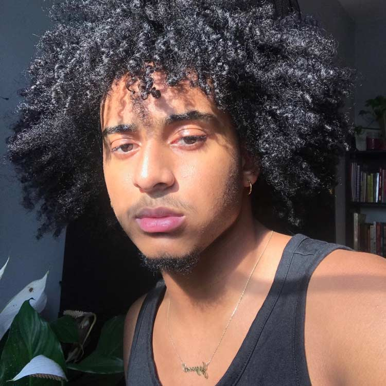
November 2020
Jayson Rodriguez
Providence, RI
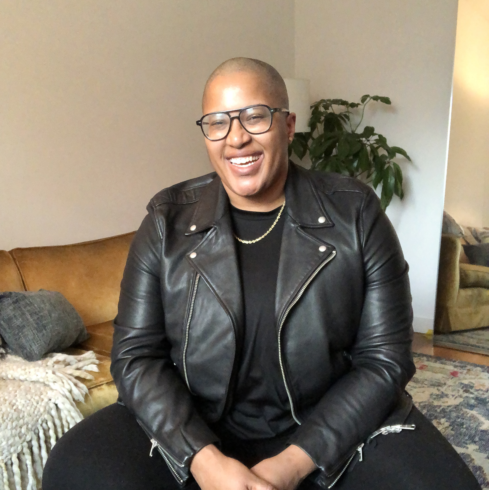
September 2020
Sloan Leo
Brooklyn, NY
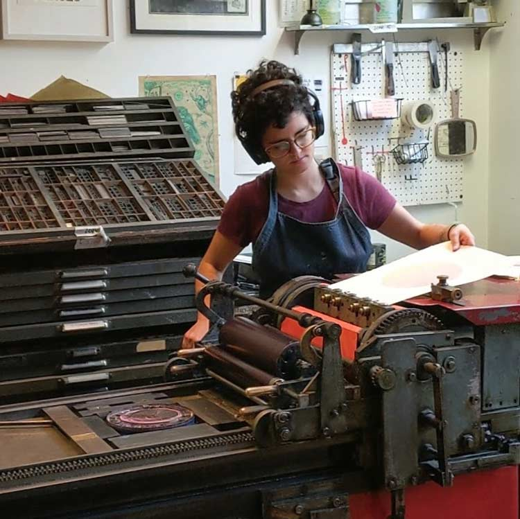
February 2021
Sara Inacio
Providence, RI
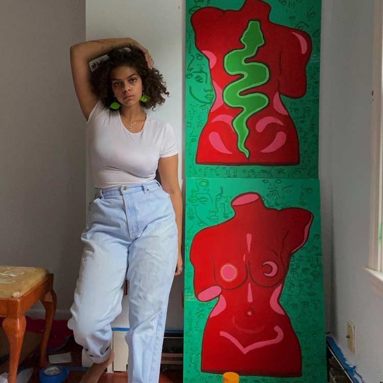
November 2020
Laila Ibrahim
Providence, RI
Artists-in-Residence
Queer.Archive.Work launched its first-ever residency program in August 2020 with Cierra Michele Peters, Sloan Leo, H. Çaca Yvaire, Luis Quintanilla, Nadia Wolff, Sara Inacio, Demario Dotson, and Cai Diluvio. They were selected by a Providence-based review team from an open call that included 88 applicants throughout the US and Canada. For a special residency in November, QAW will host and support Jayson Rodriguez and Laila Ibrahim, students at The Met High School in Providence, for the production and launch of their new BIPOC literary zine, Violet Magic.
QAW residencies are currently scheduled through May 2021. An open call for the 2021–22 season will be announced in March 2021.
What we offer
QAW offers the entire Providence, RI studio space to each resident for the realization of a particular project. Each residency may be up to two weeks in duration, with full access to the studio, the risograph printer, the library, and all equipment and supplies (inks, papers, paper trimmer, etc.), including an unrestricted stipend of $500 awarded directly to the artist, to be used for any purpose that enables them to access the residency (travel, food, rent, project supplies, etc.). This is a work-only residency (no lodging provided).
Accessibility
QAW has one main level that is easily accessed via wheelchair from the street and parking lot, plus two interior spaces that are accessible only by stair. The printer and library are permanently located on the first floor and accessible. Any tools, supplies, and resources that are not already on the first floor may be re-located there for the duration of a residency, if so desired.
Selection process
In selecting residents, we prioritize queer methods, radical publishing, and experimentation, as practiced by folks who are traditionally underserved. 2020/2021 residencies were determined by a Providence-based review team that included artist Edwige Charlot, writer Nora Khan, QAW founder Paul Soulellis, and QAW director David Kim. Edwige’s thought leadership and extensive experience in artistic community development was crucial in the creation of our residency evaluation process. QAW benefited from a new, strategic framework for equitable review that was shaped through Edwige’s expertise and guidance, in collaboration with the team, and this framework continues to be instrumental to QAW as we evolve.
The open call closed on May 22, 2020. Read more about our evaluation process here.


In the studio
A single drum SF9450 Risograph printer
Plenty of master rolls
Six color ink drums and lots of extra ink
Various papers (standard letter and tabloid sizes)
Three large work surfaces, lots of wall space
$500 stipend
Dahle 442 paper trimmer
Scissors, adhesive tapes, glue sticks, pens, pencils, xcto knives, cutting mat, straight edges, etc.
Coil binding machine “CoilBind S-20A” and 4:1 pitch black spiral coils (8mm, 12mm)
Bostich heavy-duty stapler (up to 130 sheets at a time)
Bostich booklet stapler
Experimental publishing library for reference and inspiration (zines, books, objects)
Hang-out/project space and an additional workspace upstairs
Wifi
QAW code of conduct
Residents have unlimited access to the studio, but please note that this residency is strictly work-only
Last updated: September 25, 2020
This website is licensed under Creative Commons CC BY-NC-SA 4.0 


Queer.Archive.Work, Inc. • Incorporated 2020 •
A 501(c)(3) not-for-profit organization
40 Sprague Street, 1G Providence, RI 02907 / 212-243-5080
Instagram /
Twitter /
Email